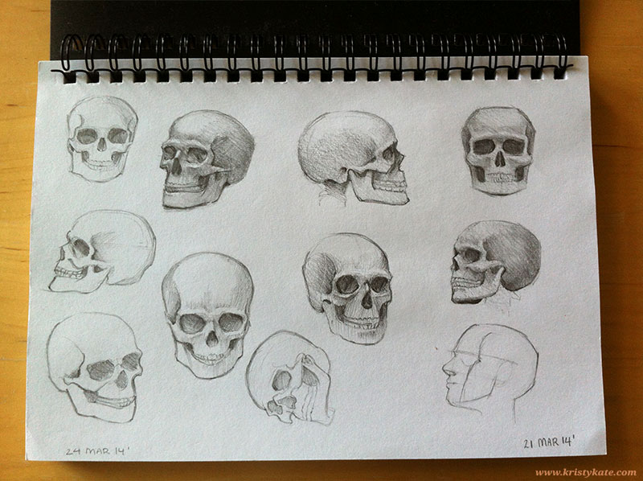
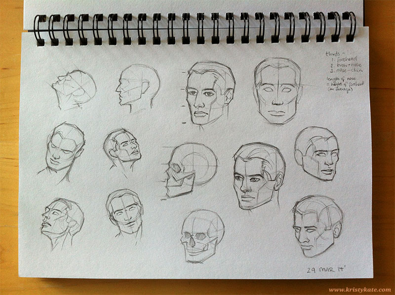

Week 1 Studies
March 24th - 30th
Well, Week 1 of my journey is over, so it's time to share some studies!
This week I concentrated on the Human Head, completing a mix of studies from life, photos in magazines and Drawing the Head & Hands by Andrew Loomis.


I also practiced drawing figures (I believe it's best to get a context of the whole figure immediately) via pixelovely, a fantastic online figure drawing tool.

+ + +
Have any thoughts on my studies? Help me become a better artist by leaving a comment (constructive criticism welcome) or getting in contact via Twitter or Facebook. I'm more than happy to return the favour!